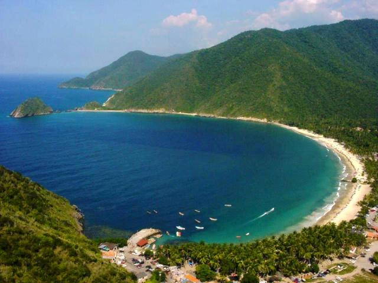
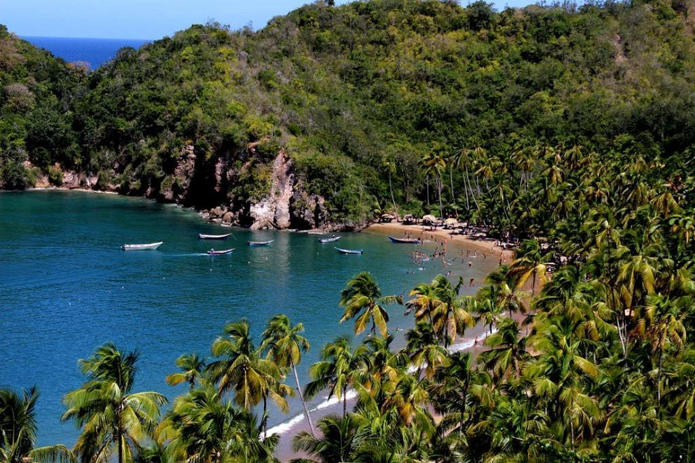
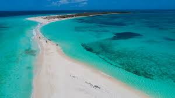

Ubicada en el estado Aragua. Accesible por carretera desde Maracay, esta playa combina montaña y mar. Su pueblo colonial y ambiente bohemio la convieerten en un destino cultural y natural.
Una de las más populares de Margarita, con más de 2 km de arena dorada, restaurantes, y actividades acuáticas. Muy visitadas por turistas nacionales e internacionales.

Ubicada en el estado Sucre. Rodeada de palmeras y vegetación tropical, esta playa ofrece un ambiente sereno y natural.Sus aguas verdes y oleaje moderado la hacen ideal para descansar
Ubicada en Los Roques. Considerada unas de las más hermosas del país, con una lengua de arena que une dos cayos. Perfecta para fotos espectaculares y baños tranquilos.
Un paraíso de aguas turquesas y arenas blancas, ideal para el buceo, el kitesurf y la relajación. Gran Roque es la isla principal, con hospedajes rústicos y acceso aéreo.